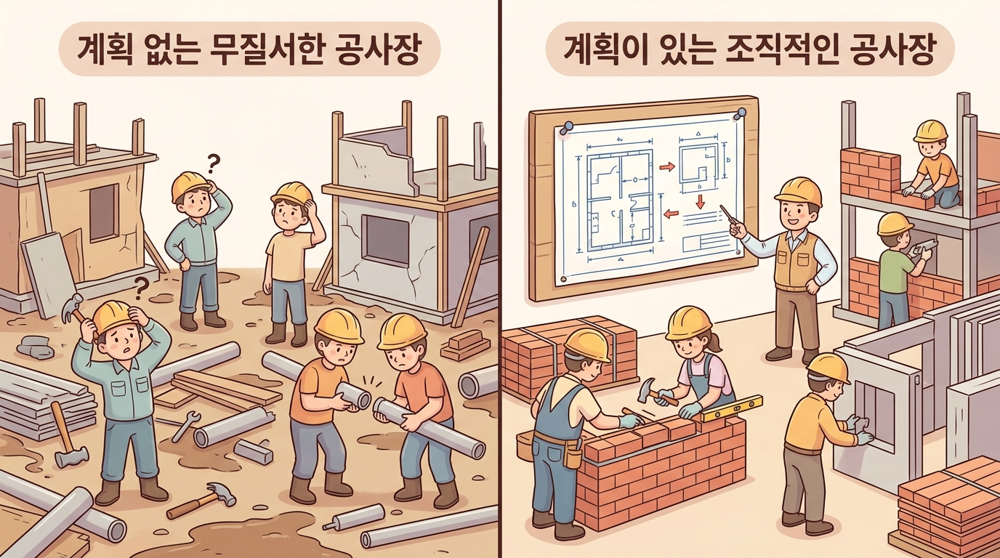
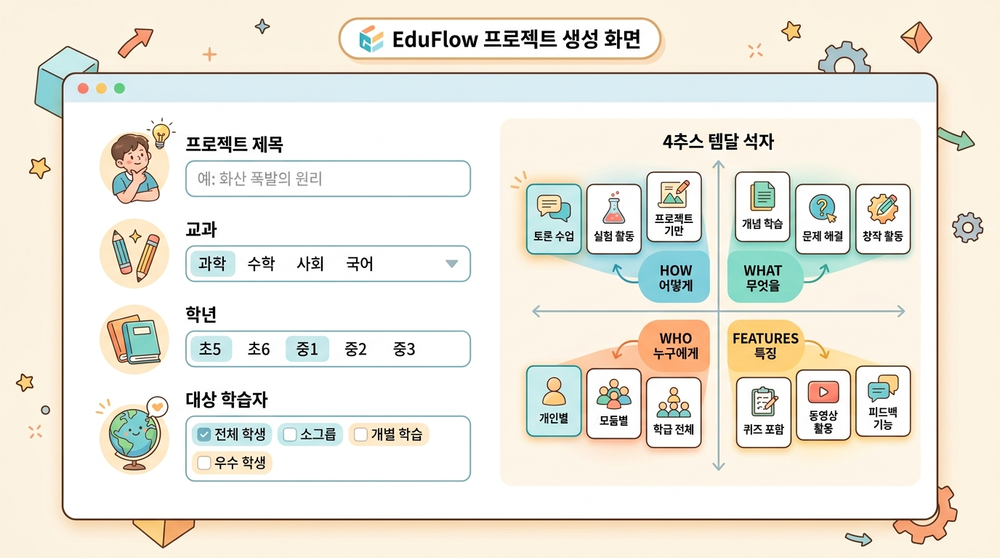

Step 0 · 프로젝트 관리 — 교재 정보 입력과 템플릿 선택¶
이 챕터에서 배울 것¶
- 에듀플로에서 새 프로젝트를 생성하고 교재의 기본 정보(제목·교과·학년·대상)를 입력할 수 있습니다.
- 4축 템플릿 시스템(HOW·WHAT·WHO·Features)의 각 축이 무엇을 의미하는지 설명할 수 있습니다.
- 자신의 교재에 맞는 템플릿 조합을 직접 선택할 수 있습니다.
- Step 0에서 내린 결정이 이후 모든 단계에 어떤 영향을 미치는지 이해합니다.
도입 — 설계도 없이 집을 짓는다면?¶
지난 챕터에서 우리는 "교사는 창작자, AI는 도구"라는 에듀플로의 핵심 철학을 살펴보았습니다. AI라는 강력한 도구가 생겼으니, 이제 바로 교재 본문을 쓰기 시작하면 될까요?
잠깐, 비유 하나를 떠올려 봅시다.
집을 짓는다고 상상해 보세요. 벽돌과 시멘트와 크레인이 모두 준비되어 있습니다. 그런데 설계도가 없습니다. "일단 벽부터 쌓고 보자"라고 하면 어떻게 될까요? 방의 크기도, 창문의 위치도, 화장실의 개수도 정하지 않은 채 벽돌을 쌓기 시작하면 — 결국 중간에 허물고 다시 시작해야 합니다.
교재도 마찬가지입니다. 본문을 쓰기 전에 "이 교재는 어떤 교재인가?"를 먼저 정의해야 합니다. 누구를 위한 교재인지, 어떤 방식으로 가르칠 건지, 어떤 교과 특성을 반영할 건지. 이 결정들이 설계도가 되어 이후 모든 단계의 방향을 잡아줍니다.
Step 0 · 프로젝트 관리는 바로 이 설계도를 그리는 단계입니다.

본문¶
1. 새 프로젝트 생성 — 교재의 신분증 만들기¶
에듀플로에 로그인하면 가장 먼저 보이는 것은 프로젝트 목록 화면입니다. 여기서 "새 프로젝트 만들기" 버튼을 누르면, 교재의 기본 정보를 입력하는 화면이 나타납니다.
입력하는 항목은 간단합니다.
| 항목 | 설명 | 입력 예시 |
|---|---|---|
| 제목 | 교재의 이름 | "처음 만나는 파이썬" |
| 교과 | 어떤 과목인지 | 정보, 수학, 과학 등 |
| 학년 | 대상 학년 | 고등학교 1학년 |
| 대상 학습자 | 학생의 특성 | "코딩 경험이 전혀 없는 학생" |
이 네 가지 정보는 일종의 교재의 신분증입니다. 사람의 신분증에 이름·생년월일·주소가 적혀 있듯, 교재의 신분증에는 제목·교과·학년·대상이 적혀 있습니다. 이 정보가 명확해야 AI도 정확한 방향으로 도와줄 수 있습니다.
💡 왜 "대상 학습자"를 구체적으로 써야 할까요?
"고등학생 대상"이라고만 쓰는 것과 "코딩 경험이 전혀 없는 고등학교 1학년 학생"이라고 쓰는 것은 결과가 크게 다릅니다. 후자의 경우 AI는 전문 용어를 피하고, 비유를 더 많이 사용하고, 실습 난이도를 낮추어 교재를 생성합니다. 구체적으로 쓸수록, AI의 출력이 정확해집니다.
2. 4축 템플릿 시스템 — 교재의 성격을 네 방향에서 정의하기¶
기본 정보를 입력한 다음, 에듀플로의 가장 핵심적인 기능인 4축 템플릿 선택 화면으로 넘어갑니다.
"템플릿"이라는 단어를 들으면, 파워포인트의 디자인 테마를 떠올리기 쉽습니다. 하지만 에듀플로의 템플릿은 단순한 겉모습이 아닙니다. 교재의 교육 철학과 구조를 결정하는 설계 도구입니다.
비유를 들어볼까요? 요리를 한다고 생각해 보세요.
- HOW = 조리법 (볶을까, 구울까, 찔까?)
- WHAT = 재료 (고기 요리인가, 해산물 요리인가?)
- WHO = 먹는 사람 (어린이인가, 어른인가, 매운 것을 못 먹는 사람인가?)
- Features = 특별한 도구 (에어프라이어를 쓸까, 오븐을 쓸까?)
같은 "닭고기"라도 조리법과 먹는 사람에 따라 완전히 다른 요리가 됩니다. 교재도 마찬가지입니다. 같은 "파이썬 프로그래밍"이라도, 네 축의 조합에 따라 전혀 다른 교재가 만들어집니다.
이제 각 축을 하나씩 살펴보겠습니다.
🔷 첫 번째 축: HOW — "어떻게 가르칠까?"¶
HOW 축은 교수법의 뼈대를 결정합니다. 같은 내용이라도 "어떤 방식으로 전달하느냐"에 따라 챕터의 구조 자체가 달라집니다.
| 템플릿 | 핵심 철학 | 챕터 구조 | 이런 경우에 적합합니다 |
|---|---|---|---|
| 교과서 | 탐구 학습, 개념 이해 중심 | 학습 목표 → 탐구 → 개념 정리 → 확인 문제 | 정규 수업용 교재 |
| 워크숍 | 실습 중심, 프로젝트 기반 | 도입 → 실습 → 발표 → 피드백 | 코딩, 실험, 만들기 수업 |
| 스토리텔링 | 내러티브 기반, 몰입 학습 | 이야기 도입 → 개념 발견 → 적용 → 마무리 | 흥미 유발이 중요한 경우 |
| 자기주도 | 자율 학습, 자기 조절 | 사전 점검 → 학습 → 자기 평가 → 심화 | 방과후, 자습용 자료 |
| 인터랙티브 | 역량 중심, 체험 학습 | 도입 → 체험 → 토론 → 정리 | 디지털 환경 수업 |
| 교사용 가이드 | 4C 모델 | 연결 → 조각 → 창작 → 통합 | 교사 연수, 수업 지도안 |
예를 들어, "파이썬으로 데이터 분석하기"라는 교재를 만든다고 해봅시다.
- 워크숍을 선택하면: "먼저 이 데이터셋을 열어보세요 → 코드를 따라 치세요 → 결과를 발표하세요" 형태가 됩니다.
- 스토리텔링을 선택하면: "수진이는 학교 매점 매출 데이터를 발견했다. 가장 잘 팔리는 메뉴는 무엇일까?" 형태가 됩니다.
같은 내용, 완전히 다른 학습 경험입니다.
🔷 두 번째 축: WHAT — "무엇을 가르칠까?"¶
WHAT 축은 교과 특성에 맞는 전략을 결정합니다. 수학 교재와 영어 교재는 설명 방식, 활동 유형, 시각화 요소가 근본적으로 다릅니다.
| 템플릿 | 특화 전략 |
|---|---|
| STEM 이론 | 수식, 실험, 데이터 분석 중심 |
| 프로그래밍 | 코드 블록, 단계적 실습, 실행 결과 포함 |
| 언어 학습 | 어휘, 문법, 대화 연습 중심 |
| 비즈니스 | 사례 연구, 의사 결정 시뮬레이션 |
| 예술 실기 | 작품 감상, 창작 활동 중심 |
| 토론/탐구 | 질문 중심, 근거 기반 논증 |
WHAT 축을 선택하면, AI가 해당 교과에 적합한 방식으로 콘텐츠를 생성합니다. "프로그래밍"을 선택하면 코드 블록과 실행 결과가 자동으로 포함되고, "STEM 이론"을 선택하면 수식과 그래프가 자연스럽게 들어갑니다.
🔷 세 번째 축: WHO — "누구를 가르칠까?"¶
WHO 축은 학습자의 수준에 맞는 언어와 설명 방식을 결정합니다. 이 축의 선택에 따라 AI가 사용하는 어휘, 문장 길이, 예시의 양이 달라집니다.
| 학습자 프로필 | 어휘 수준 | 문장 길이 | 예시 밀도 |
|---|---|---|---|
| 초등학생 | 일상 어휘 | 15자 이내 | 매우 높음 (개념당 3개 이상) |
| 중학생 | 교과 기초 어휘 | 20자 이내 | 높음 (개념당 2개 이상) |
| 고등학생 | 교과 전문 어휘 | 25자 이내 | 보통 (개념당 1~2개) |
| 대학생 | 학술 어휘 | 30자 이내 | 보통 (개념당 1개) |
| 교사 연수 | 교육학 전문 어휘 | 제한 없음 | 보통 |
같은 "변수"라는 개념을 설명할 때를 비교해 보겠습니다.
초등학생 대상: "변수는 이름표가 붙은 상자예요.
나이 = 12라고 쓰면, '나이'라는 상자에 12가 들어갑니다."대학생 대상: "변수(variable)는 값을 저장하는 메모리 공간에 부여된 식별자입니다.
age = 12선언 시 인터프리터는 메모리에 정수 객체를 생성하고age라는 이름으로 참조합니다."
WHO 축 하나만 바꿔도 교재의 톤이 완전히 달라지는 것이 느껴지시나요?
🔷 네 번째 축: Features — "어떤 요소를 넣을까?"¶
Features 축은 교재에 포함할 특별한 기능 요소를 선택합니다. 이 축은 다른 세 축과 달리 여러 개를 동시에 선택할 수 있습니다.
| 기능 | 설명 | 활용 예 |
|---|---|---|
| 코드 블록 | 실행 가능한 코드 포함 | 프로그래밍, 데이터 분석 교재 |
| 수식 (LaTeX) | 수학 공식 렌더링 | 수학, 물리, 화학 교재 |
| Mermaid 다이어그램 | 개념 관계, 프로세스 시각화 | 모든 교과 |
| 이미지 생성 | AI가 삽화를 자동 생성 | 설명 보조 시각자료 |
| 퀴즈 체크포인트 | 학습 중간 자기 점검 | 자기주도 학습 교재 |
| 코드 샌드박스 | 브라우저에서 직접 코드 실행 | 실습 중심 교재 |
| 인터랙티브 HTML | 클릭, 드래그 등 상호작용 요소 | 시뮬레이션, 체험 학습 |
💡 고르기 어려우시다면? 처음에는 "Mermaid 다이어그램"과 "이미지 생성" 두 가지만 선택해도 충분합니다. 나중에 언제든 추가할 수 있습니다.
3. 네 축이 합쳐지면 — 조합의 힘¶
네 축을 각각 이해했으니, 이제 조합이 어떻게 작동하는지 살펴봅시다. 실제 예시 두 가지를 비교하겠습니다.
예시 A: 초등학교 과학 교재
| 축 | 선택 |
|---|---|
| HOW | 스토리텔링 |
| WHAT | STEM 이론 |
| WHO | 초등학생 |
| Features | 이미지 생성, Mermaid 다이어그램, 퀴즈 체크포인트 |
이 조합으로 만들어지는 교재는 이런 모습입니다: 매 챕터가 하나의 이야기로 시작되고, 이야기 속에서 과학 개념을 발견하며, 쉬운 단어와 짧은 문장으로 설명하고, 귀여운 삽화와 중간중간 퀴즈가 배치됩니다.
예시 B: 고등학교 프로그래밍 교재
| 축 | 선택 |
|---|---|
| HOW | 워크숍 |
| WHAT | 프로그래밍 |
| WHO | 고등학생 |
| Features | 코드 블록, 코드 샌드박스, Mermaid 다이어그램 |
이 교재는 실습 중심으로, 도입이 짧고 곧바로 코드를 작성하며, 브라우저에서 직접 실행해보고, 결과를 확인하는 구조가 됩니다.
같은 에듀플로, 같은 AI, 하지만 네 축의 선택이 다르면 완전히 다른 교재가 만들어집니다. 이것이 4축 템플릿의 힘입니다.
4. Step 0의 결정이 이후 단계에 미치는 영향¶
Step 0에서 입력한 정보와 선택한 템플릿은 단순히 "기록"되는 것이 아닙니다. 이후 모든 단계에서 AI가 참고하는 기준점이 됩니다.
이해가 되시나요? Step 0은 "시작일 뿐"이 아니라, 교재의 전체 방향을 결정하는 나침반입니다. 처음에 나침반을 정확히 맞추면, 이후 모든 단계가 올바른 방향으로 진행됩니다.
💡 "나중에 바꿀 수 있나요?"
네, 언제든 가능합니다. Step 0으로 돌아와서 템플릿을 변경할 수 있습니다. 다만, 이미 생성된 콘텐츠가 있다면 새 템플릿에 맞게 다시 조정해야 하므로 — 처음에 신중하게 선택하는 것이 시간을 아끼는 길입니다.
실습 — 나의 첫 프로젝트 만들기¶
이제 직접 해봅시다! 아래 순서를 따라 자신의 교재 프로젝트를 생성해 보세요.
실습 1: 교재 기본 정보 정하기¶
아래 표를 채워보세요. 실제로 만들고 싶은 교재를 떠올리며 적어도 좋고, 연습 삼아 가상의 교재를 설정해도 좋습니다.
| 항목 | 나의 입력 |
|---|---|
| 제목 | (예: "처음 만나는 파이썬") |
| 교과 | (예: 정보) |
| 학년 | (예: 고등학교 1학년) |
| 대상 학습자 | (예: 코딩 경험이 전혀 없는 학생) |
✏️ 작성 팁: "대상 학습자"는 최소 한 문장으로 구체적으로 적어보세요. "고등학생"보다 "프로그래밍을 처음 접하는 고등학교 1학년, 수학에 대한 자신감이 낮은 학생"이 훨씬 좋습니다.
실습 2: 4축 템플릿 선택하기¶
아래 각 축에서 하나씩 선택하고, 그렇게 선택한 이유를 한 줄씩 적어보세요. 이유를 적는 과정이 자신의 교재를 더 선명하게 만들어 줍니다.
HOW (형태) - [ ] 교과서 - [ ] 워크숍 - [ ] 스토리텔링 - [ ] 자기주도 - [ ] 인터랙티브 - [ ] 교사용 가이드
→ 선택 이유: ___
WHAT (교과) - [ ] STEM 이론 - [ ] 프로그래밍 - [ ] 언어 학습 - [ ] 비즈니스 - [ ] 예술 실기 - [ ] 토론/탐구
→ 선택 이유: ___
WHO (학습자) - [ ] 초등학생 - [ ] 중학생 - [ ] 고등학생 - [ ] 대학생 - [ ] 교사 연수
→ 선택 이유: ___
Features (기능) — 여러 개 선택 가능 - [ ] 코드 블록 - [ ] 수식 (LaTeX) - [ ] Mermaid 다이어그램 - [ ] 이미지 생성 - [ ] 퀴즈 체크포인트 - [ ] 코드 샌드박스 - [ ] 인터랙티브 HTML
→ 선택 이유: ___
실습 3: 에듀플로에서 프로젝트 생성하기¶
- 에듀플로에 로그인합니다. (Google 계정으로 간편 로그인)
- 프로젝트 목록 화면에서 "새 프로젝트 만들기" 버튼을 클릭합니다.
- 실습 1에서 정한 기본 정보를 입력합니다.
- 실습 2에서 선택한 4축 템플릿을 설정합니다.
- "프로젝트 생성" 버튼을 눌러 완료합니다.

⚠️ 주의! 프로젝트를 생성한 뒤에도 기본 정보와 템플릿은 수정할 수 있습니다. 하지만 이미 Step 4(챕터 제작) 이후 단계까지 진행했다면, 템플릿 변경 시 기존 콘텐츠를 다시 조정해야 할 수 있습니다. 가능하면 Step 0에서 충분히 고민한 뒤 다음으로 넘어가세요.
정리¶
이번 챕터에서 배운 핵심을 세 줄로 정리합니다.
- Step 0은 교재의 설계도입니다. 제목·교과·학년·대상 학습자 정보를 입력하여 교재의 기본 방향을 설정합니다.
- 4축 템플릿(HOW·WHAT·WHO·Features)은 단순한 디자인이 아니라, 교재의 교육 철학·구조·언어 수준·기능 요소를 동시에 결정하는 시스템입니다.
- Step 0의 선택은 이후 모든 단계에 영향을 미칩니다. 처음에 정확히 설정하면 이후 과정이 수월해지고, AI의 출력 품질도 높아집니다.
다음 챕터 미리보기¶
Step 0에서 프로젝트를 만들었으니, 다음 단계에서는 AI와 대화하며 교재의 방향을 구체화합니다. "이 교재에서 가장 중요한 것은 뭘까?", "학생들이 가장 어려워할 부분은 어디일까?" — 이런 질문들을 AI와 주고받으며, 막연한 아이디어를 선명한 계획으로 바꾸어 갑니다. Step 1 · 방향성 논의에서 만나요!
확인 문제¶
스스로 점검해 보세요. 머릿속으로 답을 떠올린 뒤, 아래 힌트를 확인합니다.
Q1. 에듀플로에서 새 프로젝트를 생성할 때 입력하는 네 가지 기본 정보는 무엇인가요?
힌트 보기
제목, 교과, 학년, 대상 학습자입니다. 이 네 가지가 교재의 "신분증" 역할을 합니다.Q2. 4축 템플릿에서 HOW 축은 무엇을 결정하나요? WHAT 축과 어떻게 다른가요?
힌트 보기
HOW 축은 "어떻게 가르칠까" — 교수법과 챕터 구조를 결정합니다. (예: 교과서, 워크숍, 스토리텔링) WHAT 축은 "무엇을 가르칠까" — 교과 특성에 맞는 콘텐츠 전략을 결정합니다. (예: STEM 이론, 프로그래밍, 언어 학습) HOW는 "가르치는 방식", WHAT은 "가르치는 내용의 성격"입니다.Q3. WHO 축에서 "초등학생"을 선택한 경우와 "대학생"을 선택한 경우, AI가 생성하는 교재에서 구체적으로 어떤 차이가 생기나요?
힌트 보기
초등학생: 일상 어휘 사용, 15자 이내 짧은 문장, 개념당 3개 이상의 예시와 비유가 포함됩니다. 대학생: 학술 어휘 사용, 30자 이내 문장, 개념당 1개 정도의 예시가 포함됩니다. 어휘 수준, 문장 길이, 예시 밀도 세 가지가 핵심 차이입니다.Q4. Step 0에서의 선택이 이후 단계에 미치는 영향을 한 가지 예시로 설명해 보세요.
힌트 보기
예시: HOW 축에서 "워크숍"을 선택하면, Step 2(목차 작성)에서 매 챕터가 "도입 → 실습 → 발표 → 피드백" 구조로 생성됩니다. 만약 "교과서"를 선택했다면, "학습 목표 → 탐구 → 개념 정리 → 확인 문제" 구조가 됩니다. Step 0의 선택이 목차의 뼈대를 결정하는 것입니다.Q5. Features 축에서 "코드 블록"과 "코드 샌드박스"의 차이는 무엇일까요?